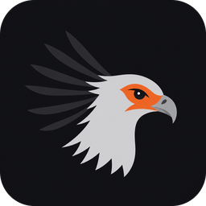
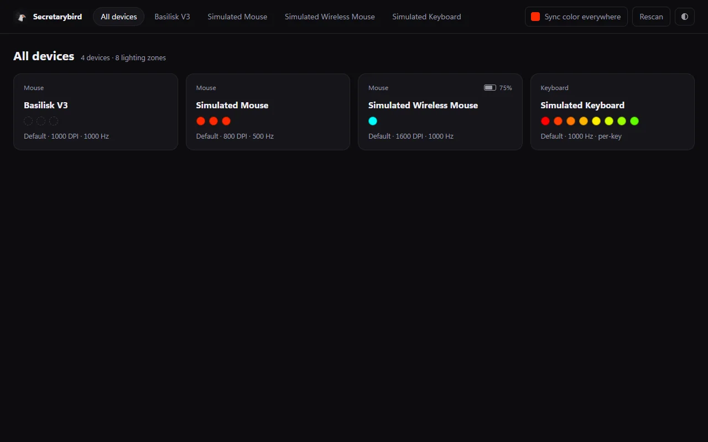

Secretarybird
Your Razer gear, minus the bloat.
Download for WindowsFree · Windows 10 and 11 · 2.6 MB
The project is fully open source. Read every line of code on GitHub.

Everything Synapse does for your lights and DPI. Nothing else.
No background servicesAn optional cleanup command turns Razer's services off. Your devices keep working, and it can be undone.
No pop-ups, no adsNo account, no updater, nothing sent to the internet.
TinyA 650 KB app using about 11 MB of memory in the tray.
No restartsFinds your devices in about a second. Settings come back after unplugging, sleep and reboot.
Install in a minute
- Click "Download for Windows" above.On the page that opens, click Secretarybird-Setup-….exe.
- Run the file you downloaded.If Windows says "Windows protected your PC", click More info, then Run anyway. This appears because the app is new and not code-signed yet; it doesn't mean it found a problem.
- Click Next until it's done.No administrator password needed. Close Razer Synapse if it's running, so the two don't fight over your settings.
- Click the bird in the taskbar tray(near the clock; click ^ if it's hidden) and choose Open editor.
Help us test it. It's a beta and has only been tested on one mouse so far, the Basilisk V3. Other Razer devices should work but haven't been tried yet.
If you try it, tell us how it went, working or not. It takes two minutes and helps us a lot.
Report how your device works